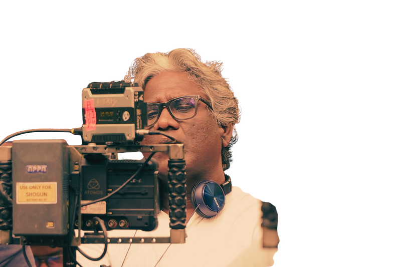
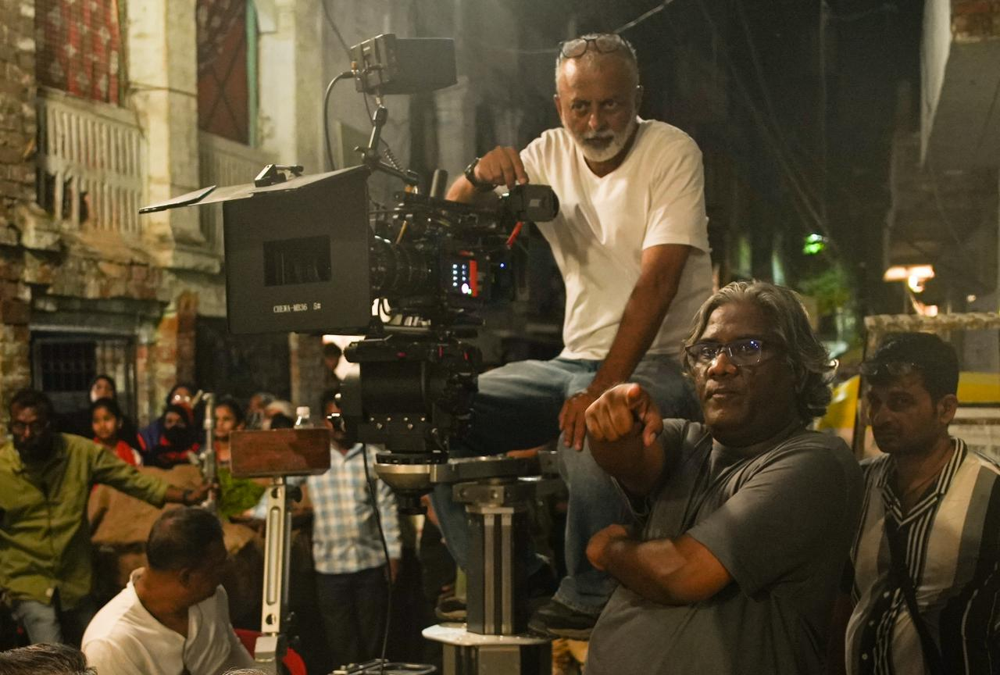

Let's Craft
A New Tale
Together
A New Tale
Together
आइए, मिलकर
एक नई कहानी
गढ़ें
एक नई कहानी
गढ़ें


At Equal Tales Entertainment, we master the art of storytelling, exploring every corner of narratives to craft cinema that resonates. We believe in delving deep into the audience's psyche, weaving emotions and authenticity into each frame. With every project, we aim to redefine the power of meaningful and revolutionary storytelling, ensuring that no story remains untold.
इक्वल टेल्स एंटरटेनमेंट में, हम कहानी कहने की कला में महारत हासिल करते हैं, ऐसा सिनेमा गढ़ने के लिए हर बारीकी को टटोलते हैं जो दर्शकों के दिल तक पहुंचे। हमारा मानना है कि दर्शकों के मन की गहराई में उतरकर ही हर फ्रेम में भावना और सच्चाई बुनी जा सकती है। हर प्रोजेक्ट के साथ, हमारा मक़सद है सार्थक और क्रांतिकारी कहानी-कहन की ताक़त को फिर से परिभाषित करना, ताकि कोई भी कहानी अनकही न रह जाए।

Avinash Das is an acclaimed filmmaker and storyteller known for crafting compelling narratives rooted in social realism and human emotion. With a career spanning journalism and filmmaking, he has been associated with impactful projects such as Satyamev Jayate with Aamir Khan, the critically acclaimed film Anaarkali of Aarah, the Netflix series She, and the suspenseful Raat Baaki Hai. Avinash Das's work resonates with audiences for its authenticity, bold themes, and a unique ability to address socio-political issues through engaging storytelling.
अविनाश दास एक जाने-माने फ़िल्ममेकर और कहानीकार हैं, जो सामाजिक यथार्थ और मानवीय भावनाओं में गहरे पैठी हुई कहानियां गढ़ने के लिए जाने जाते हैं। पत्रकारिता से फ़िल्ममेकिंग तक फैले अपने करियर में वे आमिर ख़ान के साथ सत्यमेव जयते, समीक्षकों द्वारा सराही गई फ़िल्म अनारकली ऑफ़ आरा, नेटफ्लिक्स की सीरीज़ शी, और रोमांचक रात बाक़ी है जैसे प्रभावशाली प्रोजेक्ट्स से जुड़े रहे हैं। अविनाश दास का काम अपनी सच्चाई, साहसिक विषयों और सामाजिक-राजनीतिक मुद्दों को दिलचस्प कहानी-कहन के ज़रिए उठाने की अनूठी क्षमता के लिए दर्शकों से गहरा जुड़ाव बनाता है।
Equal Tales Entertainment is dedicated to crafting impactful cinema and digital content that bridges entertainment and social relevance. With a focus on authentic storytelling, we spotlight underrepresented voices, challenge societal norms, and present universal themes with a contemporary lens. Our vision is to nurture fresh talent, celebrate diversity, and create narratives that inspire, provoke thought, and connect with audiences across generations, setting new benchmarks in the world of storytelling.
इक्वल टेल्स एंटरटेनमेंट प्रभावशाली सिनेमा और डिजिटल कंटेंट गढ़ने के लिए समर्पित है, जो मनोरंजन और सामाजिक सरोकार के बीच पुल बनाता है। सच्ची कहानी-कहन पर ध्यान देते हुए, हम कम सुनी गई आवाज़ों को सामने लाते हैं, सामाजिक मान्यताओं को चुनौती देते हैं, और सार्वभौमिक विषयों को समकालीन नज़रिए से पेश करते हैं। हमारा विज़न है नई प्रतिभाओं को संवारना, विविधता का उत्सव मनाना, और ऐसी कहानियां रचना जो प्रेरित करें, सोचने पर मजबूर करें, और पीढ़ियों के दर्शकों से जुड़ें - कहानी-कहन की दुनिया में नए मानक स्थापित करते हुए।
Equal Tales Entertainment was established to explore every aspect of cinema and redefine storytelling for a modern audience. Our mission is to identify the unspoken desires of viewers, curate stories that resonate deeply, and bring them to life with authenticity and creativity. We believe in transforming ideas into impactful narratives that engage, inspire, and entertain, bridging the gap between content and the audience's true expectations.
इक्वल टेल्स एंटरटेनमेंट की स्थापना सिनेमा के हर पहलू को टटोलने और आधुनिक दर्शकों के लिए कहानी-कहन को फिर से परिभाषित करने के लिए हुई थी। हमारा मक़सद है दर्शकों की अनकही इच्छाओं को पहचानना, गहराई से जुड़ने वाली कहानियां चुनना, और उन्हें सच्चाई और रचनात्मकता के साथ जीवंत करना। हम विचारों को प्रभावशाली कहानियों में बदलने में विश्वास रखते हैं जो जोड़ें, प्रेरित करें और मनोरंजन करें - कंटेंट और दर्शकों की असली उम्मीदों के बीच की दूरी को पाटते हुए।
Unearth untold and authentic stories from diverse cultures and communities.
Craft innovative stories blending traditional values with modern techniques.
Create content that entertains and connects emotionally with viewers.
Deliver high-quality productions with a commitment to artistic integrity.
विविध संस्कृतियों और समुदायों से अनकही और सच्ची कहानियां खोजना।
पारंपरिक मूल्यों को आधुनिक तकनीक के साथ मिलाकर नवाचारी कहानियां गढ़ना।
ऐसा कंटेंट बनाना जो मनोरंजन करे और दर्शकों से भावनात्मक रूप से जुड़े।
कलात्मक ईमानदारी के प्रति प्रतिबद्धता के साथ उच्च गुणवत्ता वाली प्रस्तुतियां देना।
A pathbreaking film that boldly highlights a woman's fight for dignity in a patriarchal society. Acclaimed as one of the best films of the year, it stands as a powerful feminist statement in Indian cinema.
Streaming on Netflix, a gripping exploration of women's sexuality and empowerment. Its bold narrative and layered storytelling redefined the portrayal of complex female characters on screen.
A suspenseful psychological thriller streaming on ZEE5. Set on a mysterious night, it unravels secrets and betrayal with a noir-inspired narrative that keeps viewers hooked.
A lighthearted and entertaining series combining humor, drama and the complexities of relationships, weaving love, betrayal and self-discovery with quirky humor.
A deeply moving film portraying the rich yet challenging lives of Jharkhand's tribal communities - an extraordinary tale of resilience, capturing indigenous culture with authenticity and grace.
A beautifully crafted musical and political film celebrating communal harmony - soulful music and poignant storytelling delivering a message of unity and togetherness.
एक अग्रणी फ़िल्म जो पितृसत्तात्मक समाज में एक महिला की गरिमा की लड़ाई को साहसपूर्वक सामने लाती है। साल की सबसे सराही गई फ़िल्मों में शुमार, यह भारतीय सिनेमा में एक सशक्त स्त्रीवादी बयान है।
नेटफ्लिक्स पर स्ट्रीम होने वाली यह सीरीज़ महिलाओं की कामुकता और सशक्तीकरण की एक गहन पड़ताल है, जिसने पर्दे पर जटिल स्त्री किरदारों की प्रस्तुति को फिर से पारिभाषित किया।
ज़ी5 पर स्ट्रीम होने वाली एक रोमांचक मनोवैज्ञानिक थ्रिलर। एक रहस्यमयी रात पर आधारित, यह नॉयर-प्रेरित कथा के साथ राज़ और विश्वासघात की परतें खोलती है।
हास्य, ड्रामा और रिश्तों की जटिलताओं को साथ लेकर चलने वाली एक हल्की-फुल्की सीरीज़, जो प्रेम, विश्वासघात और आत्म-खोज की कहानी बुनती है।
झारखंड के आदिवासी समुदायों के समृद्ध लेकिन चुनौतीपूर्ण जीवन को दर्शाती एक गहराई से छूने वाली फ़िल्म - लचीलेपन और मानवता की एक असाधारण कहानी।
सांप्रदायिक सौहार्द का उत्सव मनाती एक ख़ूबसूरती से गढ़ी गई संगीतमय-राजनीतिक फ़िल्म, जो एकता और साथ रहने का सशक्त संदेश देती है।

An accomplished cinematographer, Arvind Kannabiran is known for his evocative visual language and strong sense of realism. His work seamlessly blends natural light with textured compositions that deepen emotional impact. His camera work is marked by restraint, authenticity, and a deep commitment to serving the narrative.

An accomplished film editor, Jabeen Merchant is known for her sharp narrative sense and deep engagement with story structure. Her work spans fiction and non-fiction, moving across documentaries, features, and long-form storytelling. Her editing is marked by clarity, sensitivity, and a collaborative approach to shaping complex narratives.

Ajay Brahmatmaj is a veteran Indian film critic, journalist, and author with decades of experience writing on cinema. He has contributed extensively to major Hindi publications and played a key role in shaping critical discourse on popular and art cinema. His writing is known for its clarity and strong engagement with narrative and performance.

Swapnil Kant Dixit is a strategist and co-founder of Jagriti Yatra, a national leadership journey connecting young changemakers across India. A management graduate from the University of California, Berkeley, he works across entrepreneurship and social initiatives. His work focuses on social change and long-term impact.
एक कुशल छायाकार, अरविंद कन्नाबिरन अपनी भावप्रवण दृश्य-भाषा और यथार्थ की गहरी समझ के लिए जाने जाते हैं। उनका काम प्राकृतिक रोशनी को बनावट भरी फ़्रेमिंग के साथ इस क़दर मिलाता है कि भावनात्मक असर और गहरा हो जाता है। उनकी कैमरावर्क संयम, सच्चाई और कहानी की सेवा के प्रति गहरी प्रतिबद्धता के लिए पहचानी जाती है।
एक कुशल फ़िल्म संपादक, जबीन मर्चेंट अपनी पैनी कथा-समझ और कहानी की बुनावट से गहरे जुड़ाव के लिए जानी जाती हैं। उनका काम फ़िक्शन और नॉन-फ़िक्शन दोनों में फैला है - डॉक्युमेंट्री, फ़ीचर फ़िल्मों और लंबी कहानियों तक। उनकी एडिटिंग स्पष्टता, संवेदनशीलता और जटिल कथाओं को गढ़ने के सहयोगात्मक तरीक़े के लिए पहचानी जाती है।
अजय ब्रह्मात्मज हिंदी सिनेमा पर दशकों के अनुभव वाले वरिष्ठ फ़िल्म समीक्षक, पत्रकार और लेखक हैं। उन्होंने प्रमुख हिंदी प्रकाशनों में व्यापक योगदान दिया है और लोकप्रिय व कला-सिनेमा दोनों पर आलोचनात्मक विमर्श गढ़ने में अहम भूमिका निभाई है। उनका लेखन अपनी स्पष्टता और कथा व अभिनय से गहरे जुड़ाव के लिए जाना जाता है।
स्वप्निल कांत दीक्षित एक रणनीतिकार और जागृति यात्रा के सह-संस्थापक हैं - एक राष्ट्रीय नेतृत्व यात्रा जो भारत भर के युवा बदलावकर्ताओं को जोड़ती है। यूनिवर्सिटी ऑफ़ कैलिफ़ोर्निया, बर्कले से प्रबंधन स्नातक, वे उद्यमिता और सामाजिक पहलों के क्षेत्र में काम करते हैं। उनका काम सामाजिक बदलाव और दीर्घकालिक असर पर केंद्रित है।
In this interview, Avinash Das discusses his transition from journalism to filmmaking and his focus on storytelling over glamour.
Read moreThis article reviews 'Anaarkali of Aarah', directed by Avinash Das, highlighting its bold narrative and feminist themes.
Read moreIn this piece, Avinash Das talks about the inspiration behind his film and the societal issues it addresses.
Read moreAn interview where Avinash Das shares insights into his filmmaking philosophy and the challenges he faces.
Read moreइस इंटरव्यू में अविनाश दास पत्रकारिता से फ़िल्ममेकिंग तक के अपने सफ़र और चमक-दमक की जगह कहानी-कहन पर अपने फ़ोकस पर बात करते हैं।
पूरा पढ़ेंयह लेख अविनाश दास की निर्देशित फ़िल्म 'अनारकली ऑफ़ आरा' की समीक्षा करता है, जो इसकी साहसिक कथा और स्त्रीवादी विषयों को रेखांकित करता है।
पूरा पढ़ेंइस लेख में अविनाश दास अपनी फ़िल्म के पीछे की प्रेरणा और उसमें उठाए गए सामाजिक मुद्दों पर बात करते हैं।
पूरा पढ़ेंइस इंटरव्यू में अविनाश दास अपनी फ़िल्ममेकिंग सोच और सामने आने वाली चुनौतियों के बारे में बताते हैं।
पूरा पढ़ें